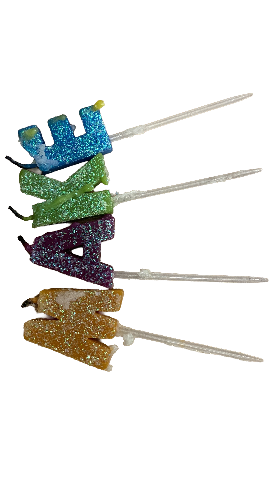

Kashvi Shervegar is a visual designer from Bangalore, India, currently based in New York City.
Her practice begins with how she sees: stories that unfold through image, rhythm, and material. She works across print and digital forms, crafting handmade publications and coded websites that carry traces of both touch and technology. Drawn to the timeless practice of traditional crafts like knitting and the layered textures of music and motion, she weaves together the sensory and the structural.
In a time when the hands-on is fading, Kashvi leans into code and craft alike—preserving what is tactile, while embracing what is evolving.